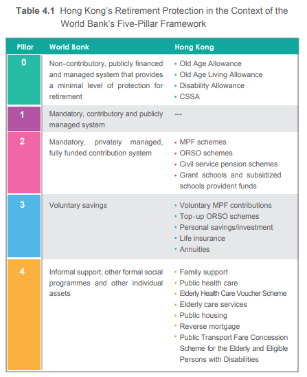
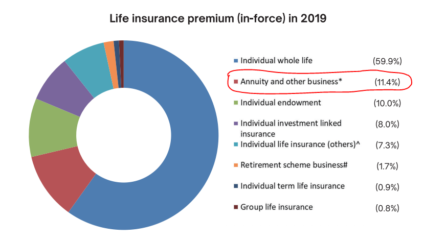

Back to Content page
Five-pillar pension system framework in Hong Kong

Remarks:
Hong Kong who chose to reside in Guangdong or Fujian are also eligible to receive OAA and OALA (on means-test basis).
- Full-time and part-time employees and self-employed persons aged 18 - 64 holding a contract of 60 days or more must enrol in MPF.
- Employees in the catering or construction industry who are employed for less than 60 days or on a daily basis (casual employees) must also be covered.
- Domestic employees, self-employed hawkers, and people covered by approved retirement schemes are exempted.
- 5% monthly mandatory contribution rate by both employers and employees, capped at $1500.
- For employees earning less than $7100, contribution will be paid by the government.
**Click here to know more about MPFA
ORSO Overview
- Coverage, contributions, and benefits are all subjected to governing rules or trust deeds.
- Tax concession for schemes with (without) MPF exemption is the same as MPF (subjected to the deductible amount specified under the Inland Revenue Ordinance).
- Employers under MPF exempted ORSO schemes are required to provide eligible employees with an option to choose between joining an MPF scheme or the MPF exempted ORSO scheme.
- When employees leave their employment, their minimum MPF benefits must be calculated and transferred from the ORSO scheme to an MPF scheme, and the remaining can be withdrawn.
Voluntary Retirement Protection Products
- HKMC Annuity (lifelong)
- Eligibility: Hong Kong permanent resident aged 60 or above
- 3254 policies issued in 2022, with total premium received of around HK$2.5 billion ($13.2 billion since 2018)
- The average premium at $777,000 gives only a monthly payout of around $3700, even less than standard CSSA allowance
1
2
- Reverse Mortgage
- Eligibility: aged 55 or above
- 938 application approved in 2022, in total of 6094 since its launch in 2011
- Under the Enhanced 3% Fixed-rate Mortgage Plan (promotional offer, ended in December 2022), borrowers can choose to pay a higher monthly mortgage insurance premium in return for a higher amount of monthly and lump-sum payout
- Policy Reverse Mortgage
- Eligibility: Hong Kong resident aged 55 or above
- Launched in May 2019, number of application not disclosed
- The eligible life insurance policy cannot be associated with any investment features while insurance products with saving and investment elements have become mainstream due to cultural reasons
3
- Only 1% respondents are having or consider having a policy reverse mortgage
4
- Silver Bond
5
- Eligibility: aged 60 or above
- Attractive guaranteed minimum interest rate (5% p.a. in the latest issuance) compared to MPF investment in less risky funds (<1% on average)
- Close to 290,000 members of the public subscribing for Government Silver Bond in 2022
- Terms/Lifelong/Deferred Annuity provided by private institutions
- Eligibility: vary across different plans (usually 18 or above)
- Only 26% of respondents have an annuity policy according to IA research report
- 4.8% have income from Interest / dividend / income from investment plan
- 57.6% had made preparations for financial needs after retirement (excluding occupational retirement protection),
among that, 47.6% with savings and investments, 13.8% have purchased insurance to cover possible medical and health care expenses for chronic illness in old age,
the rest rely on children¡¦s support

Remark: premiums for life insurance in-force policies reached HKD 511 billion in 2019
See More...
Reference
1. HKMC Annual Report 2022
2. Social Welfare Department - CSSA asset limit and monthly rate (last update on 31 January 2023)
3. Insurance Authority - Mortality Protection Gap Study 2021
4. Insurance Authority - Thematic Report: Lifetime Risk Profiling and Insurance Literacy 2022
5. Press Release - Government launches eighth batch of Silver Bond (14 July 2023)
Back to Top